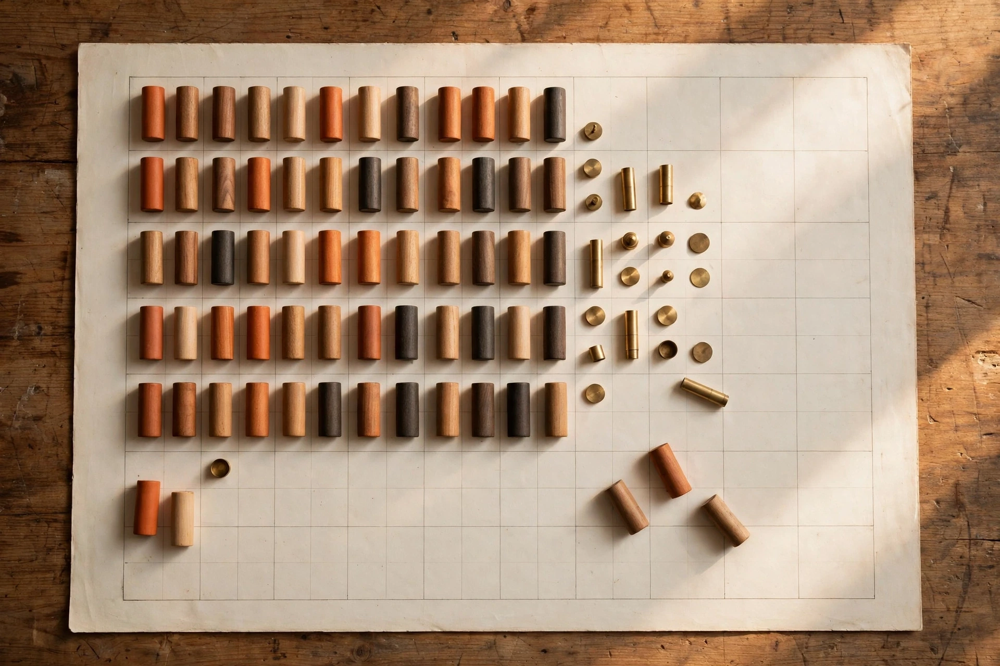

A long document can be read perfectly and still be lost. Every sentence arrives, every sentence is fluent, and somewhere in the middle the facts quietly change hands: a variable is reassigned, a total is updated, two objects swap places. At the end, the answer depends on one skill — remembering what is true now, after everything that changed. On November 3, the Allen Institute for Artificial Intelligence published StateBench on Hugging Face, a benchmark built to measure exactly that skill, and the results separate reading from tracking.
State tracking sounds modest until the examples accumulate. Reading code means following variables as values are assigned and reassigned. Following a story means knowing who holds the object after it changes hands. The benchmark takes its hardest image from a fairground classic: a ball hidden under one of five cups, the cups swapped again and again, the final position knowable only by following every swap in order. Miss one exchange and the ending is a guess, however elegant the prose around the guess.
01 · The announcement
StateBench sorts state tracking into four levels, each defined by the kind of update allowed. At the first level, values never change once set, so the task is recovery: find the original assignment, the way a birth date stays fixed. At the second level, values can be replaced, and only the latest setting counts, the way a thermostat reading supersedes every earlier one. The third level adds self-reference, where each update builds on the current value, the way a score grows point by point. The fourth level allows one variable to take the current value of another, so updates create dependencies across the whole set — the cup-and-ball level, where position is a chain, not a fact.
The four levels are not arbitrary rungs. The hierarchy is rooted in Krohn–Rhodes theory, an algebraic account of how state-tracking problems decompose into simpler parts, and the companion paper by Jackson Petty, William Merrill and Ashish Sabharwal works out which levels each architecture should handle in principle. To compare fairly, the benchmark derives all four versions from the same underlying sequence: same variables, same values, same positions. Only the type of update changes, so a failure at the fourth level cannot be blamed on a longer or denser document.

02 · Why it matters
The pretrained results follow the theory closely enough to sting. Open models, including a seven-billion-parameter transformer and a hybrid of the same size carrying Gated DeltaNet layers, handled the first level well, lost accuracy on the second as inputs grew, and stayed at chance on the hardest level. Format alone moved scores: small hybrid models scored near the ceiling when the easiest problems were framed one way and near chance when the same problems arrived as spreadsheet edits.
The frontier results sharpen the point. Four frontier models were asked to read each sequence and report the final value of every variable. All four performed well on the two easier levels. On the two harder levels, accuracy fell sharply as inputs grew longer, dropping to thirteen percent or lower on the longest problems at the hardest level — figures reported by the benchmark authors, measured on synthetic sequences built for the test. At the harder levels, far more steps can change the final answer, so a single missed update quietly decides the result.
The window was long, the facts were present, and the state was still lost.
03 · The craft angle: state belongs outside the story
The training experiments carry the constructive lesson. Small models of two hundred seventy-five million parameters were trained from scratch on sequences of at most two hundred fifty-six assignments, then tested on sequences as long as sixty-four thousand assignments — two hundred fifty times the training length. Recurrent and hybrid designs generalised almost perfectly across the first three levels out to tens of thousands of updates, and the most flexible recurrent variant stayed near perfect on the hardest level out to roughly ten times its training length. Transformer variants learned the easier levels, degraded as sequences grew, and never learned the hardest level. Architecture decided what training could teach.
Context engineering at Ovia since December 2022 starts from the operational version of the same finding. A long context window is storage, not state. Work that depends on what is currently true — the current approval, the current owner of a task — belongs in an explicit record outside the narrative: a ledger, a state table, a checked summary that the system updates deliberately and reads back before acting. The model then reasons over verified state instead of reconstructing state from thousands of lines of history, and a human can audit the record without replaying the whole conversation. StateBench gives that field habit a laboratory proof: when state must be carried inside the reading itself, even the strongest readers drop it.
04 · Caveats and fine print
The limits deserve the same care as the headline. StateBench sequences are synthetic assignments, not contracts, charts or incident threads, and real documents mix state changes with distraction and ambiguity. The benchmark also assumes a fixed number of variables, while real work introduces new people, objects and obligations as it unfolds — a setting the authors state plainly remains uncovered. Numerical precision questions stay open as well, including how rounding inside recurrent updates behaves at extreme lengths. And the frontier figures come from the benchmark team: one laboratory, one task family, reported as measured, awaiting replication.
05 · What to watch
Watch three things from here. First, whether hybrid and recurrent layers move into the production models enterprises actually buy, now that a graded benchmark can price the difference level by level. Second, whether evaluation suites adopt the same discipline — the same sequence at several difficulty levels and in several formats — because a single hard test hides exactly where a system breaks. Third, whether product design absorbs the lesson directly: explicit state records, visible change histories and read-back checks presented as features. The teams that treat state as a designed surface, rather than a side effect of a longer window, hold the advantage the benchmark just measured.
The cups keep moving either way. The craft is in refusing to guess — and in building systems that never have to.
References
- Hugging Face — Allen Institute for Artificial Intelligence, “StateBench: Testing how language models track state changes over long documents”, November 3, 2026: https://huggingface.co/blog/allenai/statebench
- Allen Institute for Artificial Intelligence — Petty, Merrill and Sabharwal, “A Fine-Grained Hierarchy and Benchmark for State Tracking in Language Models”, November 2, 2026: https://allenai.org/papers/statebench
- GitHub — allenai/state-bench, StateBench code and data generation: https://github.com/allenai/state-bench